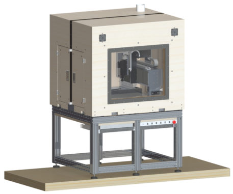
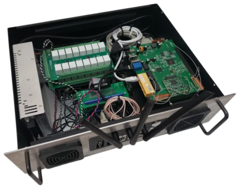
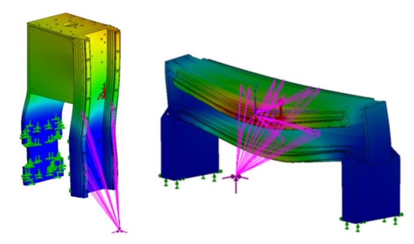

Personal Project
CNC Machine
Why build it?
I wanted a capable CNC machine that could live in a residential environment: portable, enclosed, quiet enough to be practical - but still stiff and rugged enough to machine non-ferrous metals and hardwoods.

Mechanical Structure & Integration
The custom mechanical structure utilized over 100 fabricated and machined parts to maximize stiffness.
Motor drivers, CNC controller, and computer were packaged within the machine frame.


Analysis & Alignment
FEA simulation was used to target less than 25 μm of deflection under nominal load produced from the cutting forces. The final build also required alignment using dial indicators, granite parallel blocks, and custom metrology equipment.
